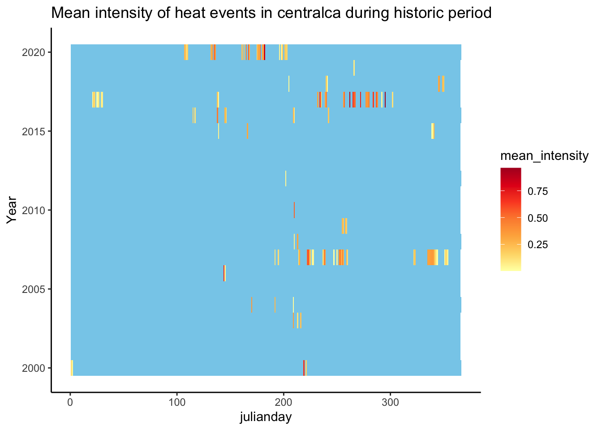
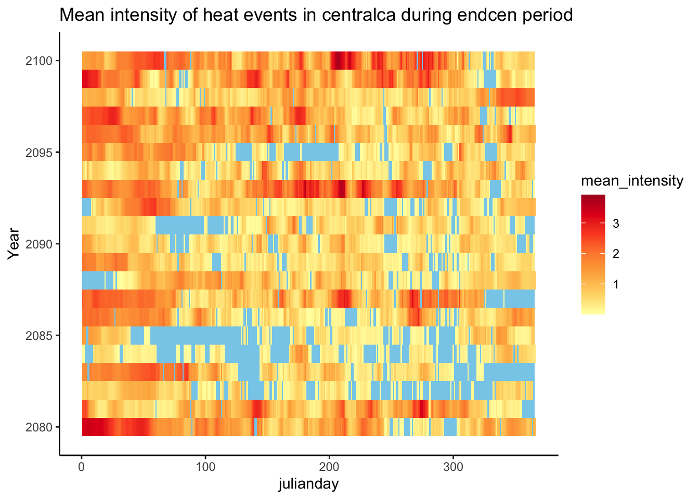
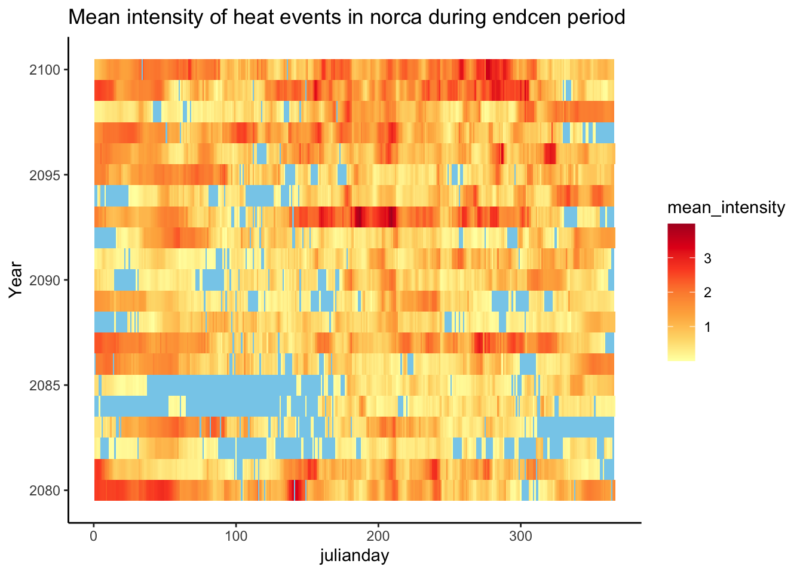
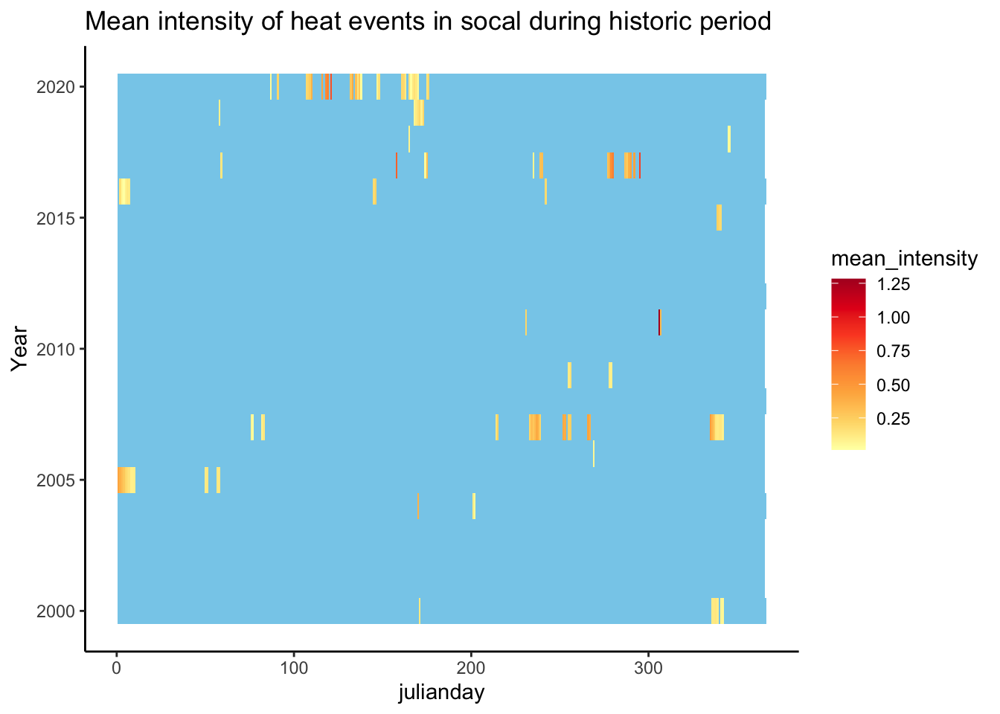
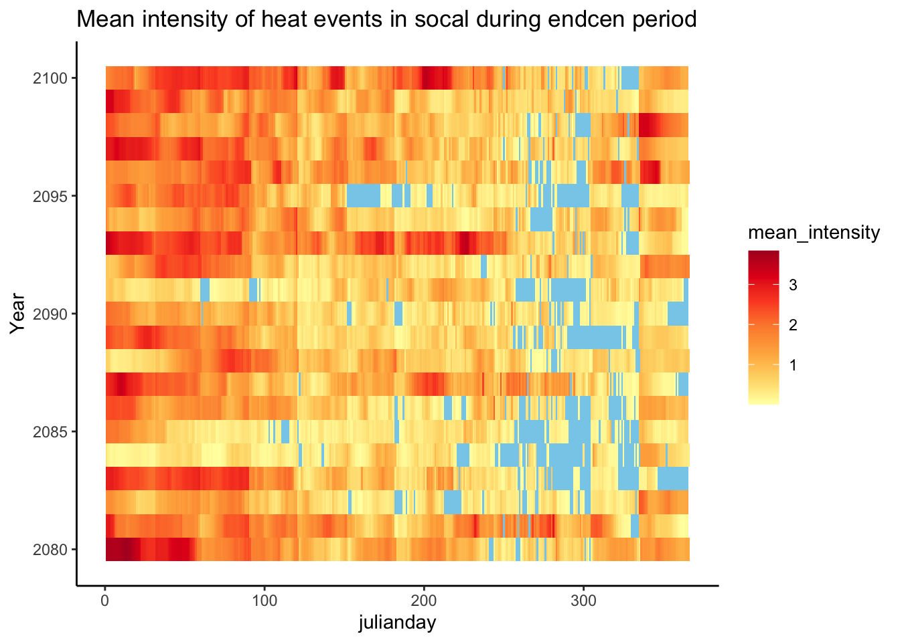

Characterization of exposure of California MPAs to future pH, DO, and temperature using IPSL model predictions.
Setup
Load required libraries, read IPSL MPA projections file, and assign MPAs to regions (Northern CA, Central CA, Southern CA, Channel Islands).
Code
#Read mpa data, convert DO units, add a column for time period, and one for difference between mid/end cen and historic.mpa <-read_csv(here("data/processeddata/model/IPSLmpa.csv")) %>%mutate(DO_mmolL = DO_surf/1000,DO_mgL =convert_DO(DO_mmolL, from ="mmol/L", to ="mg/L")) %>%filter(Year <=2020| Year >=2040& Year <=2060| Year >=2080& Year <=2100) %>%mutate(period =case_when((Year <=2020) ~"historic", (Year %in%c(2040:2060)) ~"midcen", (Year %in%c(2080:2100)) ~"endcen")) %>%select(-T_bot, -DO_bot, -pH_bot,-DO_surf,-DO_mmolL) %>%rename(Temp = T_surf,DO = DO_mgL,pH = pH_surf) %>%mutate(Date =make_date(Year, Month, Day)) %>%mutate(julianday =yday(Date))mpa$File <-substr(mpa$File, 1, nchar(mpa$File)-4)
Code
#add regions here!mpa_centroids<-read_csv(here("data/rawdata/MPA_polygons.csv")) %>%select(-Area_sq_mi, -Type)mpa_centroids$File <-sub("^", "tphdo_mpa_", mpa_centroids$OBJECTID )mpa_centroids <- mpa_centroids %>%mutate(region =ifelse(degy >=37.29, "norca", ifelse(degy >34.8, "centralca", ifelse("degy"<34.274&"degx"<-119.220, "channelisl" , "socal"))))channel <-c("Anacapa Island FMCA", "Anacapa Island FMR", "Anacapa Island SMCA", "Anacapa Island SMR", "Anacapa Island Special Closure", "Arrow Point to Lion Head Point SMCA", "Begg Rock SMR", "Blue Cavern Offshore SMCA", "Blue Cavern Onshore SMCA (No-Take)", "Carrington Point SMR", "Casino Point SMCA (No-Take)", "Cat Harbor SMCA", "Farnsworth Offshore SMCA", "Farnsworth Onshore SMCA", "Footprint FMR", "Footprint SMR", "Gull Island FMR", "Gull Island SMR", "Harris Point FMR", "Harris Point SMR", "Judith Rock SMR", "Long Point SMR", "Lover’s Cove SMCA", "Painted Cave SMCA", "Richardson Rock FMR", "Richardson Rock SMR", "San Miguel Island Special Closure", "Santa Barbara Island FMR", "Santa Barbara Island SMR", "Scorpion FMR", "Scorpion SMR", "Skunk Point SMR", "South Point FMR", "South Point SMR")mpa_centroids$region[mpa_centroids$NAME %in% channel] <-"channel"mpa <-merge(mpa, mpa_centroids, by ="File")
Calculate climatology
Create a climatology (for each MPA within a time period, Jan values averaged over all years - same for each month), so each MPA has one value per month that is averaged over all of the years. Seasonal SD is calculated later in summary stat section, and is the variation across these 12 climatologies for each MPA, representing the seasonal cycle.
Code
#calculate climatology for each MPA for each time periodmpa_climatology <- mpa %>%group_by(File, Month, period) %>%summarise(T_clim =mean(Temp), pH_clim =mean(pH), DO_clim =mean(DO))
Calculate event-based variation
To understand event-based variation (not attributed to the seasonal cycle), we need to find the deviation of actual daily values from a climatological value. To do so, a mock dataset with julian day climatologies is created by interpolating monthly climatology values. Actual daily values are subtracted from this interpolated dataset at the daily scale. The standard deviation of this difference is the event-based SD, which is calculated in the summary stat section.
Q: instead of interpolating from monthly climatologies to create daily climatologies, why not average daily values to get daily climatologies?
Code
#' Setup for interpolation:#' Need to create a day 1 and day 365 proxy. The approx function can only interpolate not extrapolate. The approx function is used to interpolate between the 15th day of each month, and day 1 and day 365 are used to interpolate the first 15 and last 15 days of the year.##below creates empty vectors as big as we need (365 days per mpa) for each variable and each mpa. julianday is dates 1-365 as many mpa timesmpaslist =unique(mpa$File) mpas =rep(NA, 365*121)julianday =rep(1:365, 121)interp =rep(NA, 365*121)#Set up a vector of julian day assignment for the 15th of each month and the first and last day of the yearx_in <-yday(as.Date(c("2001-01-01", "2001-01-15","2001-02-15","2001-03-15","2001-04-15","2001-05-15","2001-06-15","2001-07-15","2001-08-15","2001-09-15","2001-10-15","2001-11-15","2001-12-15", "2001-12-31")))# creating a list of all the days of the year to interpolate to.x_out <- (1:365)
Code
interpolate <-function(periodt, variable){ mpa_period_climatology <- mpa_climatology %>%filter(period == periodt)for (i in1:length(mpaslist)){ #for each mpa d <- mpa_period_climatology %>%#for given mpa iterating through, selects var from climfilter(File == mpaslist[i]) %>%select(File,Month, !!sym(variable))#use a weighted average. for dec 31, slightly more than half weight to dec (denoted by [12,3] index - 12 is the month, third column is the variable's clim value), little less than half weight to jan. for jan 1, slightly more weight to jan, little less weight to dec. Dec31 =as.numeric(( ((16/30) * (d[12,3])) + ((14/30) * d[1,3]) )) Jan1 =as.numeric(( ((14/30) * (d[12,3])) + ((16/30) * d[1,3]) )) y_in <-c(Jan1, d[[variable]], Dec31) mod <-approx(x = x_in, #days to interpolate fromy = y_in, #temp values per day in x_inxout = x_out) #1-365 days to interpolate out to#I don't understand this part mpas[((i-1)*365+1):(i*365)] <- mpaslist[i] #rep(mpaslist[1], 365) interp[((i-1)*365+1):(i*365)] <- mod$y } df <-data.frame(mpas, julianday, interp) %>%rename(File = mpas) %>%mutate(period = periodt) %>%rename(!!sym(variable) := interp)assign(x =paste("interp",variable,periodt, sep="_"), value = df, envir =globalenv())}
Seasonal SD is across climatologies (monthly values averaged over all years resulting in 12 values per MPA - one per month - the seasonal SD captures the seasonal cycle, and is the variation across these values).
Event SD is calculated based on the deviation of daily values from interpolated daily values. The standard deviation per MPA is across all of the daily differences between daily value and interpolated values filtered for upwelling months May, June, July, August, and September (filtered, not grouped by upwelling month - the Event SD captures variation of the deviations at a daily scale).
Additional summary stats include the mean, lower 10th percentile, and upper 10th percentile.
Code
#calculate seasonal SD seasonal_SD <- mpa_climatology %>%group_by(File, period) %>%summarise(T_seasonalSD =sd(T_clim),pH_seasonalSD =sd(pH_clim),DO_seasonalSD =sd(DO_clim))#put all summary stats together - first, calculate event SDsum <- mpa %>%#merge interpolated climatologies to mpa. (used to calculate event sd)merge(interpolated_temp, by =c("File", "julianday", "period")) %>%merge(interpolated_pH, by =c("File", "julianday", "period")) %>%merge(interpolated_DO, by =c("File", "julianday", "period")) %>%#subtract actual values - interpolated climatology values #filtered for only upwelling months!!mutate(temp_deviation = Temp - T_clim,pH_deviation = pH - pH_clim,DO_deviation = DO - DO_clim) %>%filter(Month ==c(5,6,7,8,9)) %>%#find event based SD group_by(File, period) %>%mutate(T_eventSD =sd(temp_deviation),pH_eventSD =sd(pH_deviation),DO_eventSD =sd(DO_deviation)) %>%ungroup() %>%select(-T_clim, -pH_clim, -DO_clim, -temp_deviation,-pH_deviation, -DO_deviation) %>%#merge seasonal SD merge(seasonal_SD, by =c("File", "period")) %>%#adding other summary stats - mean, low 10th and upper 10th percentilesgroup_by(File, period) %>%mutate(across(c(Temp, DO, pH), list(mean = mean, low10 =~quantile(.x, 0.1),high10 =~quantile(.x,0.9)))) %>%# to get to scale of one row per mpaselect(-...1, -Temp, -pH, -DO, -julianday, -Year, -Month, -Day) %>%distinct(File, .keep_all =TRUE) %>%ungroup()
PCA
PCA of all summary stats (mean, lower 10th percentile, upper 10th percentile, seasonal SD, event SD) clustered by regions within specified time period.
Create heatmaps per summary stat showing time periods on x-axis, and all MPAs on y-axis to pick up on finer scale geographical patterns in change of summary stats over time.
Code
col <-colorRampPalette(brewer.pal(9,"YlOrRd"))(256)invert_col <-colorRampPalette(rev(brewer.pal(9,"YlOrRd")))(256)make_heatmap <-function(sumstat, color_palette = invert_col, title){#make matrix for variable of interest matrix <- sum %>%mutate(color =case_when((region =="centralca") ~"#ffff99", (region =="norca") ~"#beaed4", (region =="socal") ~"#fdc086", (region =="channel") ~"#7fc97f")) %>%select(!!sym(sumstat), NAME, degy, period, region, color) %>%pivot_wider(names_from = period, values_from = sumstat) %>%arrange(degy)#making matrix numeric for heatmap to work matrix_numeric <- matrix %>%arrange(degy) %>%select(-NAME, -region, -degy, -color) %>%select(historic, midcen, endcen) %>%as.matrix()row.names(matrix_numeric) <- matrix$NAME#jpeg(file=here(paste("./figs/heatmap/heatmap",sumstat,".png", #sep = "_"))) heatmap <-heatmap.2(matrix_numeric, Rowv =FALSE, Colv =FALSE, dendrogram ="none", main = title, tracecol=NA, revC=TRUE,margins =c(3,5), col= color_palette, srtCol =360, labRow = matrix$NAME,cexRow =0.5, cexCol =1, keysize =0.95, key.title = sumstat, key.xlab =NA, key.ylab =NA, par(cex.main=0.5)) #+#RowSideColors = matrix$color - add this within above - but it is inverted need to fix.#legend("left", #legend = c("Central CA", "Northern CA", "Southern CA", "Channel Isl"),#col = unique(matrix$color), #lty= 1, #lwd = 5, #cex=.7#)#ggsave(here(paste("./figs/heatmap/heatmapTEST.png")), plot)#dev.off()}
Temp:
pH
DO
Regressions
Supplements heatmaps by looking at the correlation between historic and future time periods for a given summary stat. Each point is an MPA, and values for given summary stat within specified time periods are on the axes.
Identify pH/DO/temp anomalous events. Events for pH are defined as 2+ days where pH < 7.75, and events for DO are 2+ days where DO < 4.6. Events for temp defined as 2+ days where daily temp exceeds historical climatology’s temp for that month + 2* historical climatology SD.
For each event, the following are calculated: 1) Duration of days, 2) Date event began, 3) Mean pH/DO/T during the event, 4) Intensity of the event (threshold - event mean), 5) Severity of the event (intensity*duration).
For each MPA, the following are calculated: 1) Number of events, 2) Mean event duration, 3) Mean of average event pH/DO/T, 4) Mean event intensity, 5) Mean event severity, 6) Average number of events within a year, 7) Average annual pH/DO/T during event
Code
# Create labels for events (e.g., consecutive days with low pH or low DO) using run # length encodinglabel_events <-function(is_event) { event_rle <-rle(is_event) labels <-ifelse(event_rle$values, cumsum(event_rle$values), NA)rep(labels, event_rle$lengths)}#all event categorization for pH and DO events <- mpa %>%group_by(period) %>%select(File, Date, Year,NAME, pH, DO, period, degx, degy, julianday) %>%mutate(is_pH_low = pH <7.75,pH_event =label_events(is_pH_low),is_DO_low = DO <4.6,DO_event =label_events(is_DO_low),is_pH_and_DO_low =ifelse(is_pH_low ==TRUE& is_DO_low ==TRUE, TRUE, FALSE),pH_and_DO_event =label_events(is_pH_and_DO_low))
#temp:mpa_with_histclimsd <- mpa %>%filter(period =="historic") %>%group_by(File, Month) %>%summarise(hist_T_clim =mean(Temp), hist_T_clim_sd =sd(Temp)) %>%#this sd is temp over all days in Jan - rather than average of each jan's SD - does it make a difference? merge(mpa, by =c("File", "Month"))temp_event_summary <- mpa_with_histclimsd %>%group_by(period) %>%select(File, Date, Year,NAME, Temp, hist_T_clim, hist_T_clim_sd, period, degx, degy, julianday) %>%mutate(is_temp_high = Temp > (hist_T_clim +2*hist_T_clim_sd),temp_event =label_events(is_temp_high)) %>%filter(is_temp_high ==TRUE) %>%group_by(File, temp_event, period) %>%mutate(duration_days =n(),event_begin =min(Date),event_mean =mean(Temp), intensity = Temp - (hist_T_clim +2*hist_T_clim_sd),severity = intensity*duration_days) %>%filter(duration_days >1) %>%ungroup() %>%#mpa summary (across periods)group_by(File, period) %>%mutate(num_event =n_distinct(temp_event), mean_event_duration =mean(duration_days), max_event_duration =max(duration_days),mean_event_mean_temp =mean(event_mean), mean_event_intensity =mean(intensity),mean_event_severity =mean(severity)) %>%ungroup() %>%#mpa summary (annual)group_by(File, Year, period) %>%mutate(annual_days_abovethresh =n(), annual_avg_temp_abovethresh =mean(Temp)) %>%ungroup() %>%group_by(File, period) %>%mutate(meanannual_days_abovethresh =mean(annual_days_abovethresh),meanannual_avg_temp_abovethresh =mean(annual_avg_temp_abovethresh)) #now removing event-scale variables not needed to condense to mpa scaletemp_mpa_summary <- temp_event_summary %>%select(-Temp,-duration_days, -event_begin, -event_mean, -intensity, -severity, -is_temp_high, -temp_event, -julianday, -annual_days_abovethresh, -annual_avg_temp_abovethresh) %>%distinct(period, File, .keep_all =TRUE)#used latertemp_all_events <-left_join(mpa, temp_event_summary,by =c("File", "Date", "Year", "NAME", "Temp", "period", "degx", "degy", "julianday"))
Map of anomalous events
Maps showing anomalous event summaries in CA, including average number days crossed threshold in a year, and average value when threshold is crossed. Same color scheme fixed across time periods, using equal breaks classification of values across all periods.
Reading layer `CA_Counties_TIGER2016' from data source
`/Users/nikitasridhar/Documents/GitHub/MPAexposure/data/rawdata/shp/CA_Counties/CA_Counties_TIGER2016.shp'
using driver `ESRI Shapefile'
Simple feature collection with 58 features and 17 fields
Geometry type: MULTIPOLYGON
Dimension: XY
Bounding box: xmin: -13857270 ymin: 3832931 xmax: -12705030 ymax: 5162404
Projected CRS: WGS 84 / Pseudo-Mercator
Code
make_anom_map <-function(mpa_summary_df, sumstat, periodt, palette ="YlOrRd", diff =FALSE){#converting df to spatial data format anom_points <-st_as_sf((mpa_summary_df %>%filter(period == periodt)), coords =c("degx","degy"))#creating period diff df: calculating diff btwn time points for given sumstat period_diff <- temp_mpa_summary %>%pivot_wider(names_from = period,values_from = meanannual_days_abovethresh,id_cols =c(File, degx, degy)) %>%mutate(mid_hist_diff = midcen - historic,end_hist_diff = endcen - historic,end_mid_diff = endcen - midcen)#converting period diff df to spatial data format period_diff_anom_points <-st_as_sf(period_diff,coords =c("degx","degy"))#finding equal interval breaks based on all time periods all_breaks <- classInt::classIntervals(mpa_summary_df[[sumstat]], 8, "equal") all_diff_breaks <-pivot_longer(period_diff, c(mid_hist_diff,end_hist_diff,end_mid_diff)) all_diff_breaks <- classInt::classIntervals(all_diff_breaks$value, 10, "equal")#if diff parameter is false: create regular maps of sumstatif (diff ==FALSE){tm_shape(CA_shp) +#basemaptm_fill(col ="#ccebc5") +tm_shape(anom_points) +tm_dots(col = sumstat, palette = palette, size =0.2, breaks = all_breaks[["brks"]]) +tm_layout(bg.color ="#a6cee3",legend.title.size =1,legend.text.size = .8) #if diff parameter is true: create 3 maps of diff between each time period } else {#mid-hist diff mid_hist <-tm_shape(CA_shp) +#basemaptm_fill(col ="#ccebc5") +tm_shape(period_diff_anom_points) +tm_dots(col ="mid_hist_diff", palette = palette, size =0.2, breaks = all_diff_breaks[["brks"]]) +tm_layout(bg.color ="#a6cee3",legend.title.size =1,legend.text.size = .8) #end-hist diff end_hist <-tm_shape(CA_shp) +#basemaptm_fill(col ="#ccebc5") +tm_shape(period_diff_anom_points) +tm_dots(col ="end_hist_diff", palette = palette, size =0.2, breaks = all_diff_breaks[["brks"]]) +tm_layout(bg.color ="#a6cee3",legend.title.size =1,legend.text.size = .8)#end-mid diff end_mid <-tm_shape(CA_shp) +#basemaptm_fill(col ="#ccebc5") +tm_shape(period_diff_anom_points) +tm_dots(col ="end_mid_diff", palette = palette, size =0.2, breaks = all_diff_breaks[["brks"]]) +tm_layout(bg.color ="#a6cee3",legend.title.size =1,legend.text.size = .8) return(list(mid_hist = mid_hist, end_hist = end_hist, end_mid = end_mid)) } }
Heat events
Historic: Avg # days above threshold in a year
Midcen: Avg # days above threshold in a year
Endcen: Avg # days above threshold in a year
Historic: Mean temperature during event
Midcen: Mean temperature during event
Endcen: Mean temperature during event
Difference in heat events: change between historical and future time periods
Difference between midcen and historic avg days above threshold in a yr
Difference between endcen and historic avg days above threshold in a yr
Difference between endcen and midcen avg days above threshold in a yr
pH events
Historic: Avg # days below threshold in a year
Midcen: Avg # days below threshold in a year
Endcen: Avg # days below threshold in a year
Historic: Mean pH during event
Midcen: Mean pH during event
Endcen: Mean pH during event
Difference in pH events: change between historical and future time periods
Difference between midcen and historic avg days below threshold in a yr
Difference between endcen and historic avg days below threshold in a yr
Difference between endcen and midcen avg days below threshold in a yr
DO events
Historic: Avg # days below threshold in a year
Midcen: Avg # days below threshold in a year
Endcen: Avg # days below threshold in a year
Historic: Mean pH during event
Midcen: Mean DO during event
Endcen: Mean DO during event
Difference in DO events: change between historical and future time periods
Difference between midcen and historic avg days below threshold in a yr
Difference between endcen and historic avg days below threshold in a yr
Difference between endcen and midcen avg days below threshold in a yr
Severity, Intensity, Duration
Create figures displaying occurrences of events throughout the year, to determine seasonal influence. Julian days on x-axis, years on y-axis, and events are shaded by intensity (threshold minus event mean).
Code
#NOTE: when made into one function sev_int_dur for all variables (df as a parameter), it takes FOREVER to load while it is very quick when function is specific to variable (temp_sev_int_dur).#temp:temp_sev_int_dur <-function(periodt, site){ temp_all_events %>%filter(period == periodt, NAME == site) %>%ggplot(aes(julianday, Year, fill = intensity)) +geom_tile() +scale_fill_distiller(palette ="YlOrRd", direction =1, na.value ="skyblue") +theme_classic() +ggtitle(paste(periodt, "Heat events at", site)) }temp_sev_int_dur_regional <-function(periodt, regionn){ temp_all_events %>%#this find mean intensity of a given julian day from all MPAs in a regiongroup_by(period, region, Year, julianday) %>%summarise(mean_intensity =mean(intensity, na.rm=TRUE)) %>%filter(period == periodt, region == regionn) %>%ggplot(aes(julianday, Year, fill = mean_intensity)) +geom_tile() +scale_fill_distiller(palette ="YlOrRd", direction =1, na.value ="skyblue") +theme_classic() +ggtitle(paste("Mean intensity of heat events in", regionn, "during", periodt, "period")) }#pH:pH_sev_int_dur <-function(periodt, site){ pH_all_events %>%filter(period == periodt, NAME == site) %>%ggplot(aes(julianday, Year, fill = intensity)) +geom_tile() +scale_fill_distiller(palette ="YlOrRd", direction =1, na.value ="skyblue") +theme_classic() +ggtitle(paste(periodt, "pH events at", site)) }pH_sev_int_dur_regional <-function(periodt, regionn){ pH_all_events %>%merge(sum[,c("File","region")], by =c("File")) %>%#to get the region#this find mean intensity of a given julian day from all MPAs in a regiongroup_by(period, region, Year, julianday) %>%summarise(mean_intensity =mean(intensity, na.rm=TRUE)) %>%filter(period == periodt, region == regionn) %>%ggplot(aes(julianday, Year, fill = mean_intensity)) +geom_tile() +scale_fill_distiller(palette ="YlOrRd", direction =1, na.value ="skyblue") +theme_classic() +ggtitle(paste("Mean intensity of pH events in", regionn, "during", periodt, "period")) }#DODO_sev_int_dur <-function(periodt, site){ DO_all_events %>%filter(period == periodt, NAME == site) %>%ggplot(aes(julianday, Year, fill = intensity)) +geom_tile() +scale_fill_distiller(palette ="YlOrRd", direction =1, na.value ="skyblue") +theme_classic() +ggtitle(paste(periodt, "DO events at", site)) }DO_sev_int_dur_regional <-function(periodt, regionn){ DO_all_events %>%merge(sum[,c("File","region")], by =c("File")) %>%#to get the region#this find mean intensity of a given julian day from all MPAs in a regiongroup_by(period, region, Year, julianday) %>%summarise(mean_intensity =mean(intensity, na.rm=TRUE)) %>%filter(period == periodt, region == regionn) %>%ggplot(aes(julianday, Year, fill = mean_intensity)) +geom_tile() +scale_fill_distiller(palette ="YlOrRd", direction =1, na.value ="skyblue") +theme_classic() +ggtitle(paste("Mean intensity of DO events in", regionn, "during", periodt, "period")) }
Temp
Central CA:


Northern CA:

Southern CA :


Channel Islands:
pH
Central CA:
Northern CA:
Southern CA :
Channel Islands:
DO
Central CA:
Northern CA:
Southern CA :
Channel Islands:
Multiple stressor analysis
Frequency an MPA encounters multiple events. Note: an event is 1+ days, whereas previously it was defined as 2+ days. Thus, total number of possible events for one stressor in a year is 365.
Code
multi_event <-function(periodt,regionn){all_events <- events %>%merge(temp_event_summary, by =c("File", "NAME", "Date","Year", "degx", "degy","period","julianday")) %>%merge(sum[,c("File","region")], by =c("File")) %>%mutate(multi_stressor =case_when(is_pH_low ==TRUE& is_DO_low ==TRUE~TRUE, is_pH_low ==TRUE& is_temp_high ==TRUE~TRUE, is_DO_low ==TRUE& is_temp_high ==TRUE~TRUE, is_pH_low ==TRUE& is_DO_low & is_temp_high ==TRUE~TRUE)) #finding num of MPAs within each regionnum_mpa <- all_events %>%group_by(period, region) %>%mutate(num_mpa =n_distinct(File)) %>%ungroup() %>%distinct(region, num_mpa) #setting y range for plotifelse(periodt =="historical", yrange <-c(2000,2020), ifelse(periodt =="midcen", yrange <-c(2040,2060), yrange <-c(2080,2100)))#plot all_events %>%merge(num_mpa, by ="region") %>%group_by(julianday, period, Year, region) %>%filter(multi_stressor ==TRUE) %>%reframe(multi_prob =mean(n_distinct(File), na.rm=TRUE)/num_mpa) %>%distinct(julianday, period, Year, region, multi_prob) %>%ungroup() %>%filter(period == periodt, region == regionn) %>%ggplot(aes(julianday, Year, fill = multi_prob)) +geom_tile() +scale_fill_distiller(palette ="YlOrRd", direction =1) +theme_classic() +ylim(yrange) +xlim(1,365) +ggtitle(paste("Frequency of MPAs with 2+ stressor events","in", periodt, "period", "in", regionn)) +theme(panel.background =element_rect(fill ="skyblue"))}
Central CA
Northern CA
Southern CA
Channel Islands
Time series to put in context
Time series for each time period and variable to confirm trends seen previously in PCA, heatmaps, and anom analysis with respect to the seasonal cycle. Time series for a given period show all years in different colors, julian day on the x-axis, and the value of the variable on the y-axis. The blue line represents the climatological mean for the given time period, and the grey ribbon denotes 2SD above/below the period’s climatological mean.
Code
make_time_series <-function(periodt, site, variable){mpa %>%filter(period == periodt, NAME == site) %>%mutate(sliding_sd =roll_sd(!!sym(variable), 30, fill =NA)) %>%group_by(julianday) %>%mutate(clim_mean =mean(!!sym(variable), na.rm =TRUE),clim_sd =mean(sliding_sd, na.rm =TRUE),clim_upr = clim_mean +2* clim_sd,clim_lwr = clim_mean -2* clim_sd) %>%ungroup() %>%ggplot(aes(julianday)) +geom_ribbon(aes(ymin = clim_lwr, ymax = clim_upr),fill ="black", alpha =0.75) +geom_line(aes(y =!!sym(variable), color = Year, group = Year),alpha =0.5) +geom_line(aes(y = clim_mean), size =1, color ="blue") +scale_color_viridis_c() +theme_classic() +ggtitle(paste(periodt, variable, "at", site))}#this fig shows time series in julian days w/ envelope wrt given period's SD (NOT historic, as it should be for calculating anomalous event!)make_temp_time_series <-function(periodt, site, title){mpa %>%filter(period == periodt, NAME == site) %>%mutate(sliding_sd =roll_sd(Temp, 30, fill =NA)) %>%group_by(julianday) %>%mutate(clim_mean =mean(Temp, na.rm =TRUE),clim_sd =mean(sliding_sd, na.rm =TRUE),clim_upr = clim_mean +2* clim_sd,clim_lwr = clim_mean -2* clim_sd) %>%ungroup() %>%ggplot(aes(julianday)) +geom_ribbon(aes(ymin = clim_lwr, ymax = clim_upr),fill ="black", alpha =0.75) +geom_line(aes(y = Temp, color = Year, group = Year),alpha =0.5) +geom_line(aes(y = clim_mean), size =1, color ="blue") +scale_color_viridis_c() +theme_classic() +ggtitle(title)}make_pH_time_series <-function(periodt, site, title){mpa %>%filter(period == periodt, NAME == site) %>%mutate(sliding_sd =roll_sd(pH, 30, fill =NA)) %>%group_by(julianday) %>%mutate(clim_mean =mean(pH, na.rm =TRUE),clim_sd =mean(sliding_sd, na.rm =TRUE),clim_upr = clim_mean +2* clim_sd,clim_lwr = clim_mean -2* clim_sd) %>%ungroup() %>%ggplot(aes(julianday)) +geom_ribbon(aes(ymin = clim_lwr, ymax = clim_upr),fill ="black", alpha =0.75) +geom_line(aes(y = pH, color = Year, group = Year),alpha =0.5) +geom_line(aes(y = clim_mean), size =1, color ="blue") +scale_color_viridis_c() +theme_classic() +ggtitle(title)}make_DO_time_series <-function(periodt, site, title){mpa %>%filter(period == periodt, NAME == site) %>%mutate(sliding_sd =roll_sd(DO, 30, fill =NA)) %>%group_by(julianday) %>%mutate(clim_mean =mean(DO, na.rm =TRUE),clim_sd =mean(sliding_sd, na.rm =TRUE),clim_upr = clim_mean +2* clim_sd,clim_lwr = clim_mean -2* clim_sd) %>%ungroup() %>%ggplot(aes(julianday)) +geom_ribbon(aes(ymin = clim_lwr, ymax = clim_upr),fill ="black", alpha =0.75) +geom_line(aes(y = DO, color = Year, group = Year),alpha =0.5) +geom_line(aes(y = clim_mean), size =1, color ="blue") +scale_color_viridis_c() +theme_classic() +ggtitle(title)}